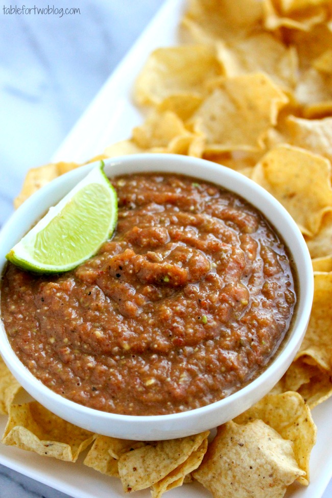

Roasted Table Salsa

Description
My wife have been married for over 5 years now. Early in our marriage we took
a trip to Oregon and visited the famous Powell's City of Books. To be honest,
I am not much of a reader, but we ended up buying a book about table salsas and
moles from Mexico. We didn't think much it until we tried a recipe for roasted
table salsa, which was so good that we now make it at least a couple times a
month. I share this in the hopes that this salsa makes others as happy as it
makes us.
Ingredients
Makes about 4 cups of salsa
- 7 - Tomatillos
- 3 - Roma Tomatoes
- 2 - Cloves of Garlic
- 1-2 - Serrano Peppers
- 1 - Yellow Onion
- 1 - Bunch of Cilantro
- Salt to taste
Instructions
- In a cast iron pot, roast the tomatillos, tomatoes, garlic, and peppers.
Turn them unti most of the sides are charred. Remove from heat and allow
to rest for 10-20 minutes.
- Peel the garlic and remove stem from peppers. Place all the roasted
ingredients in a blender and blend until chunky.
- Add onion and cilantro and blend until smooth. Add salt as needed
- Enjoy with tortilla chips, on tacos or whatever you like. Thank me later.